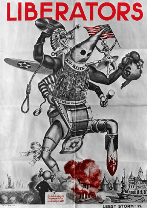
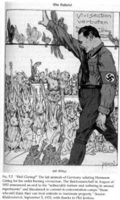

< < < Back
Why Modern Leftists Are Fascists – Return Of Kings
Fascist movements are implicitly utopian because they—like communist and heretical Christian movements—assume that with just the right arrangement of policies, all contradictions can be rectified. This is a political siren song; life can never be made perfect, because man is imperfect. (Goldberg 130)
Far too often socialism and communism are compared to what is currently the political embodiment of the modern leftist ideology in the U.S. These leftist and communist ideas include anti-capitalism, total destruction of the individual in favor of the state, and big government takeover. We have all heard this stereotype.
However, I think there is a far more accurate political ideology floating in the minds of modern leftists, thirsty for revolution to take down “the man” and change the “bourgeois system.” I am speaking of fascism.
“What!!” you say as you spit out your soy latte.
“Fascism is reserved only for evil white conservative men who spout evil fascist rhetoric like small government, individualism, self-reliance, capitalism, less dependency on government, traditionalism, and self-responsibility with strong ties to self-sustaining autonomous Christian family units!!!”
Slow down, Che, put down the vegan burger and let me explain…
Anti-American Nazi propaganda poster
After peeling back some layers and layers of Orwellian leftist language and indoctrination that fascism is of the evil American Right, closer examination reveals startling comparisons to the modern American leftist.
Fascism could not be any further from the American conservative (Classical Liberalism at it’s heart). Very few realize that fascism by its very nature was an extremely leftist populist movement taking root in Mussolini’s Italy and spreading like wild fire throughout Europe.
History of fascism
Fascism was born out of socialism (the prized ideology among the left) and was an evolved state-centric version of socialism which became popular around the early to mid 1900s. It was “new” and full of revolutionary change. Benito Amilcare Andrea Mussolini (a name consisting almost entirely of Socialist revolutionaries) was raised a charismatic Italian Socialist (his Socialist father being a huge influence on him) (Goldberg 31).
After Mussolini incorporated socialism and nationalism within Italy, fascism spread quickly (without much pretense to race that would come later with German Nazism). Fascism would eventually compete with International Socialism for the young revolutionary, the working man, the poor, and the masses in places such as Germany, France, and Italy.
State conformity reigns supreme under fascism
To many individuals, fascism state-centric ideology seemed far more of a “working system” rather than that delusional idea of “uniting the workers of the world”, which was the motto of the International Socialist. With fascism, as with all large bloated governments that leftists think can cure all our qualms, the utopian lie is propagated by the state which supposedly aims to build a communal National Socialism state-sponsored family.
Fascism was to transcend class differences exactly like socialism preached. Below are first-hand accounts according to working class Germans and their views on Hitler’s Nationalist Socialist ideas:
…Though I was interested in the betterment of the workingman’s plight, I rejected Marxism unconditionally. I often asked myself why socialism had to be tied up with internationalism- why it could not work as well or better in conjunction with nationalism’. Another German states ‘I shuddered at the thought of Germany in the grip of Bolshevism. The slogan ‘Workers of the World Unite!’ made no sense to me. At the same time, however, National Socialism with its promise of community…barring all class struggle, attracted me profoundly’. Another German stated they embraced Nazism because of the ‘uncompromising will to stamp out the class struggle, snobberies of caste and party hatreds. The movement bore the true message of socialism to the German workingman. (Goldberg 74)
Below are key points from Mussolini and the Fasci di Combattimento (a Fascist organization created by Mussolini) circa 1919 (Goldberg 46):
- The abolition of the senate and the creation of a national technical council on intellectual and manual labor, industry, commerce and culture
- The creation of various government bodies run by worker’s representatives
- The obligation of the state to build “rigidly secular” schools for the raising of “the proletariat’s moral and cultural condition”
All of this seems like the modern American leftist’s wet dream. Modern American leftist rhetoric is far closer to fascism than the American right’s strong stress on individualism, capitalism, and reduced government intervention.
Nazis were huge proponents of animal welfare and a vegetarian lifestyle, did someone say PETA?
Fascism, a party of the left
Fascism stressed huge state governments. This huge fascist government included expanding health services, enforcing anti-elitism, wealth-confiscation, and secularism (Goldberg 46) all in the name of the state and the common good. Fascism offered “anti-bourgeois, anti-capitalistic, and anti-individualist nationalism” (Sternhell 214-220).
The state was always before the individual under fascism; taking from some and redistributing to the many. This is the core of modern American leftist ideology. Many parallels of fascism are closely similar to Obamacare (expanding health services), higher taxes among the elite and wealthy (wealth confiscation), and the most recent; the fascist power grab, by the FCC “Net Neutrality” rules (anti-capitalist).
To illustrate this comparison further, let’s look at just a few of the Nazi Party’s key points (Goldberg 411):
- We demand the nationalization of all (previous) associated industries (trusts).
- We demand a division of profits of all heavy industries.
- The first obligation of every citizen must be to work both spiritually and physically. The activity of individuals is not to counteract the interests of the universality, but must have its result within the framework of the whole for the benefit of all.
I can’t tell the difference when the Nazi points end and the American leftist points begin. Not to mention, affirmative action (prized among the left) is just race privilege enforced by government intervention. Affirmative action is similar to the notorious government enforced Aryan privilege in Nazi Germany regardless of skill.
Historic dangers of the left
In all leftist extremes, be it communism, Nazism, socialism, or Fascism; murder, violence, and censorship are sure to be the eventual outcome of huge government. It is a historic pattern and if history is cyclical, which I believe it is, we are at the beginning of what will be the eventual violence found among extreme Leftist purity tactics dating back to the French Revolution (Jacboins), up through Soviet Russia (Bolsheviks), Ukraine, and Communist China.
Nothing has been more devastating and dangerous politically in the 20th century than leftist thought. If we look at 20th century communism alone we come to a whopping 85-100 million worldwide that perished under such leftist regimes, not to mention the censorship, labor camps, violation of civil liberties, and imprisonment.
Photo from the Holodomor, a man-made famine in the Ukrainian Soviet Socialist Republic
One should think of fascism not as the complete opposite of socialism and communism, but yet another kindred spirit in extreme leftist political ideologies that were competing for the hearts and minds of the populous. Not much has changed with fascist ideology of collectivism (another prized belief of the left) were individual twigs bundle together to make a strong piece of collective wood.
Allow this article to be a possible warning sign of modern day ideology, as their quest will devolve into a loss of civility and violence as we move farther and farther left. As the left ideologies become more and more resembling a preacher preaching piety from the pulpit, “action” will be the next conclusive step. Peel back the leftist Orwellian language with nice sounding words like “Obamacare” and “Net Neutrality” to expose it for what it really is; fascist policies and huge government takeover in a pretty wrapper.
The beginning of the end
Whatever the case, one should keep in mind that socialism, communism, fascism, and Nazism all are of the left; they were just different factions of the left. What is occurring in the U.S. today is not that different from what occurred in Europe some years ago. Though it may be much slower and softer, “American” Fascism echoes European Fascism and is rooted in this very ideology.
Keep this in mind when you are sitting in your cube at the Ministry of Truth, hunched over your keyboard, editing and bowdlerizing Wikipedia pages for “the party”; just remember this article and the quintessential fascist party ideology:
…(the) quest to create an all-caring, all-powerful, all-encompassing state, a state that assumes responsibility for every desirable outcome and takes the blame for every setback on the road to utopia, a state that finally replaces God (Goldberg 20)
“But it was all right, everything was all right, the struggle was finished. He had won the victory over himself. He loved Big Brother.”
Do not become the protagonist of 1984. Let’s keep fiction for the books and reality for us here in America. The philosophical and political fate of the country depends on it.
 If you like this article and are concerned about the future of the Western world, check out Roosh's book Free Speech Isn't Free. It gives an inside look to how the globalist establishment is attempting to marginalize masculine men with a leftist agenda that promotes censorship, feminism, and sterility. It also shares key knowledge and tools that you can use to defend yourself against social justice attacks. Click here to learn more about the book. Your support will help maintain our operation.
If you like this article and are concerned about the future of the Western world, check out Roosh's book Free Speech Isn't Free. It gives an inside look to how the globalist establishment is attempting to marginalize masculine men with a leftist agenda that promotes censorship, feminism, and sterility. It also shares key knowledge and tools that you can use to defend yourself against social justice attacks. Click here to learn more about the book. Your support will help maintain our operation.
Works Cited:
Goldberg, Jonah Liberal Fascism. New York: Doubleday, 2007
Sternhell, Zeev Neither Right or Left: Fascist Ideology in France. Princeton, New Jersey: Princeton University Press, 1995
Read More: Muslim Killer Craig Hicks Followed Far-Left Outlets Huffington Post And SPLC


{kind=link}
{kind=link}
{kind=link}
{kind=link}
{kind=link}